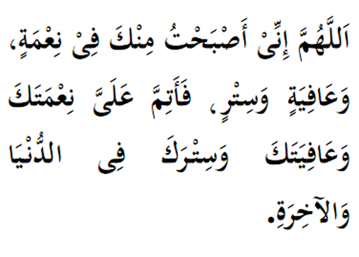

|

Terjemahan "Ya Allah, pagi ini kami kecapi nikmat pemberian-Mu, kesihatan dan perlindungan-Mu, maka sempurnakan nikmat, afiat dan perlindungan-Mu terhadap kami di dunia dan akhirat." Fadhilat Wirid Daripada Ibn Abbas (RA), dia berkata bahawa, Rasulullah (SAW) telah bersabda :"Barang siapa yang membaca pada pagi dan petang sebanyak 3 kali, maka adalah menjadi hak Allah (SWT) menyempurnakan nikmat ke atasnya." (Riwayat Ibnu Sunni) |